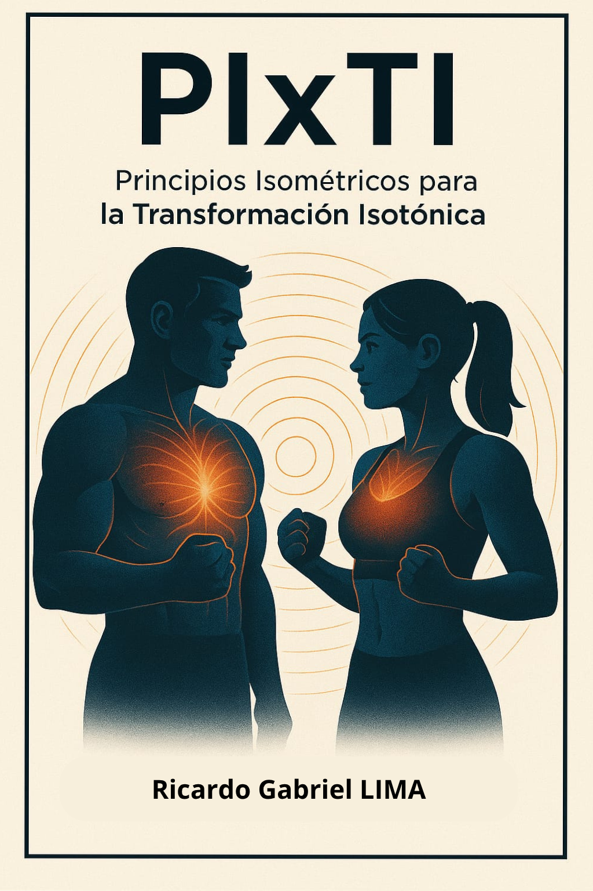

Performance Intelligence & Technology Integration
Es la intersección exacta entre la tecnología de datos y el rendimiento humano. Aplicamos ciencia para optimizar cada movimiento.
It is the exact intersection between data technology and human performance. We apply science to optimize every movement.
Recolección de datos biomecánicos de alta precisión.
High-precision biomechanical data collection.
Procesamiento inteligente de la información deportiva.
Intelligent processing of sports information.
Diseño de planes basados en evidencia científica.
Design of plans based on scientific evidence.
Máximo rendimiento con mínimo riesgo de lesión.
Maximum performance with minimum risk of injury.